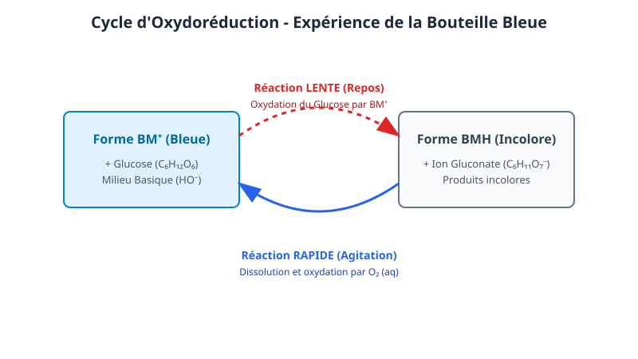
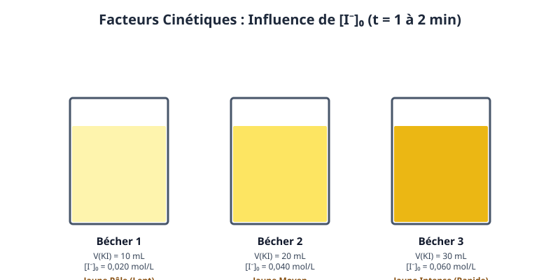

Pour équilibrer une demi-équation d'oxydoréduction $\text{Ox} + n e^- \rightleftharpoons \text{Red}$ :
Un facteur cinétique est un paramètre qui modifie la vitesse d'une réaction chimique :
Lors du mélange de plusieurs solutions sans réaction immédiate, la concentration initiale de chaque espèce $\text{X}$ dans le volume total $V_{\text{total}}$ s'exprime par :
$$\text{[X]}_0 = \frac{n_i(\text{X})}{V_{\text{total}}} = \frac{C_{\text{mère}} \cdot V_{\text{prélevé}}}{V_{\text{total}}}$$Pour la réaction $a\text{A} + b\text{B} \rightarrow c\text{C} + d\text{D}$, on compare les rapports stœchiométriques initiaux $\frac{n_0(\text{A})}{a}$ et $\frac{n_0(\text{B})}{b}$. Le réactif limitant est celui dont le rapport est le plus faible. L'avancement maximal $x_{\text{max}}$ est égal à ce rapport minimal.
Énoncé : Le bleu de méthylène existe sous deux formes : l’une $\text{BM}^+$ bleue, l’autre $\text{BMH}$ incolore, constituant un couple oxydant/réducteur. Lorsqu'on agite un mélange composé de $120\text{ mL}$ d'eau, $2\text{ g}$ d'hydroxyde de sodium, $3\text{ g}$ de glucose et quelques gouttes de bleu de méthylène, une couleur bleue apparaît instantanément, disparaît progressivement puis réapparaît si on agite...

Demi-équation en milieu acide :
$$\text{BM}^+_{(\text{aq})} + \text{H}^+_{(\text{aq})} + 2e^- \rightleftharpoons \text{BMH}_{(\text{aq})}$$Adaptation en milieu basique :
On ajoute $1\text{ HO}^-$ de chaque côté pour neutraliser l'ion $\text{H}^+$ :
$$\text{BM}^+_{(\text{aq})} + (\text{H}^+ + \text{HO}^-) + 2e^- \rightleftharpoons \text{BMH}_{(\text{aq})} + \text{HO}^-_{(\text{aq})}$$Identification :
On part de la demi-équation donnée en milieu acide :
$$\text{C}_6\text{H}_{12}\text{O}_{6(\text{aq})} + \text{H}_2\text{O}_{(\text{l})} = \text{C}_6\text{H}_{11}\text{O}_{7(\text{aq})}^- + 3\text{H}^+_{(\text{aq})} + 2e^-$$On ajoute $3\text{ HO}^-$ de chaque côté pour neutraliser les $3\text{ H}^+$ :
$$\text{C}_6\text{H}_{12}\text{O}_{6(\text{aq})} + \text{H}_2\text{O}_{(\text{l})} + 3\text{HO}^-_{(\text{aq})} = \text{C}_6\text{H}_{11}\text{O}_{7(\text{aq})}^- + 3(\text{H}^+ + \text{HO}^-) + 2e^-$$ $$\text{C}_6\text{H}_{12}\text{O}_{6(\text{aq})} + \text{H}_2\text{O}_{(\text{l})} + 3\text{HO}^-_{(\text{aq})} = \text{C}_6\text{H}_{11}\text{O}_{7(\text{aq})}^- + 3\text{H}_2\text{O}_{(\text{l})} + 2e^-$$En simplifiant une molécule d'eau $\text{H}_2\text{O}$ de chaque côté, on obtient :
En milieu acide :
$$\text{O}_{2(\text{aq})} + 4\text{H}^+_{(\text{aq})} + 4e^- \rightleftharpoons 2\text{H}_2\text{O}_{(\text{l})}$$En milieu basique :
On ajoute $4\text{ HO}^-$ de chaque côté :
$$\text{O}_{2(\text{aq})} + 4(\text{H}^+ + \text{HO}^-) + 4e^- \rightleftharpoons 2\text{H}_2\text{O}_{(\text{l})} + 4\text{HO}^-_{(\text{aq})}$$ $$\text{O}_{2(\text{aq})} + 4\text{H}_2\text{O}_{(\text{l})} + 4e^- \rightleftharpoons 2\text{H}_2\text{O}_{(\text{l})} + 4\text{HO}^-_{(\text{aq})}$$En simplifiant $2\text{H}_2\text{O}$ de chaque côté :
On combine la réduction de $\text{BM}^+$ et l'oxydation du glucose en milieu basique :
En additionnant les deux demi-équations et en simplifiant les électrons ainsi qu'une molécule d me d'eau et un ion $\text{HO}^-$ :
Changement de couleur : La solution passe de la couleur bleue (présence de $\text{BM}^+$) à l'incolore (formation de $\text{BMH}$).
On combine l'oxydation de $\text{BMH}$ et la réduction du dioxygène $\text{O}_2$ dissous :
En additionnant les deux demi-équations et en simplifiant les électrons, l'eau et les ions $\text{HO}^-$ :
Changement de couleur : La solution passe de l'incolore (forme $\text{BMH}$) au bleu (régénération de $\text{BM}^+$).
Identification des cinétiques :
Explication du phénomène d'agitation :
Au repos, la réaction lente consomme $\text{BM}^+$, rendant le liquide incolore. Lorsqu'on agite la bouteille, le dioxygène gazeux de l'air au-dessus de la solution se dissout très rapidement dans l'eau. Ce dioxygène dissous réagit de façon quasi-instantanée avec le $\text{BMH}$ incolore pour régénérer l'espèce bleue $\text{BM}^+$.
Énoncé : On dispose d’une solution d’iodure de potassium $\text{KI}$ ($C_1 = 0,20\text{ mol}\cdot\text{L}^{-1}$) et d’une solution d’acide sulfurique $\text{H}_2\text{SO}_4$ ($C_2 = 0,50\text{ mol}\cdot\text{L}^{-1}$). Dans trois béchers (1, 2, 3), on réalise les mélanges suivants :
| Composition des mélanges | Bécher 1 | Bécher 2 | Bécher 3 |
|---|---|---|---|
| $V(\text{KI})$ (mL) | 10 | 20 | 30 |
| $V(\text{acide})$ (mL) | 10 | 10 | 10 |
| $V(\text{eau})$ (mL) | 30 | 20 | 10 |
À $t = 0\text{ s}$, on ajoute dans chaque bécher un volume $V = 50\text{ mL}$ d’eau oxygénée ($C_3 = 1,0 \times 10^{-2}\text{ mol}\cdot\text{L}^{-1}$). Après une à deux minutes, une coloration jaune s’intensifie du bécher 1 au bécher 3.

Demi-équations d'oxydoréduction :
$$\text{H}_2\text{O}_{2(\text{aq})} + 2\text{H}^+_{(\text{aq})} + 2e^- \rightarrow 2\text{H}_2\text{O}_{(\text{l})} \quad (\text{réduction de } \text{H}_2\text{O}_2)$$ $$2\text{I}^-_{(\text{aq})} \rightarrow \text{I}_{2(\text{aq})} + 2e^- \quad (\text{oxydation de } \text{I}^-)$$Équation bilan :
Justification de la couleur : Le diiode formé $\text{I}_{2(\text{aq})}$ possède une couleur jaune en solution diluée (et brune lorsqu'il est plus concentré). La formation progressive de $\text{I}_2$ explique l'apparition et l'intensification de la coloration jaune.
1. Concentration initiale en eau oxygénée $[\text{H}_2\text{O}_2]_0$ :
$$n(\text{H}_2\text{O}_2)_0 = C_3 \cdot V(\text{H}_2\text{O}_2) = 1,0 \times 10^{-2} \times 0,050 = 5,0 \times 10^{-4}\text{ mol}$$2. Concentration initiale en ions oxonium $[\text{H}^+]_0$ :
L'acide sulfurique $\text{H}_2\text{SO}_4$ apporte $2\text{ H}^+$ par mole d'acide :
$$n(\text{H}^+)_0 = 2 \cdot C_2 \cdot V(\text{acide}) = 2 \times 0,50 \times 0,010 = 1,0 \times 10^{-2}\text{ mol}$$3. Concentration initiale en ions iodure $[\text{I}^-]_0$ :
Facteur cinétique mis en évidence : La concentration initiale des réactifs.
La concentration initiale en ions iodure $[\text{I}^-]_0$ augmente du bécher 1 au bécher 3 ($0,020 < 0,040 < 0,060\text{ mol}\cdot\text{L}^{-1}$). Plus la concentration des réactifs est élevée, plus le nombre de chocs efficaces par seconde entre les réactifs augmente, ce qui accroît la vitesse de réaction. C'est pourquoi la coloration jaune apparaît le plus rapidement dans le bécher 3.
Démonstration du réactif en défaut :
Comparons les rapports stœchiométriques initiaux $\frac{n_0}{a}$ :
Dans tous les béchers, $\frac{n(\text{H}_2\text{O}_2)_0}{1} < \frac{n(\text{I}^-)_0}{2}$ et $\frac{n(\text{H}_2\text{O}_2)_0}{1} < \frac{n(\text{H}^+)_0}{2}$.
Quantité et concentration finale en diiode $\text{I}_2$ :
$$x_{\text{max}} = n(\text{H}_2\text{O}_2)_0 = 5,0 \times 10^{-4}\text{ mol}$$ $$n(\text{I}_2)_{\text{final}} = x_{\text{max}} = 5,0 \times 10^{-4}\text{ mol}$$Teinte et couleur finale des béchers :
Puisque la concentration finale en diiode $[\text{I}_2]_{\text{final}}$ est rigoureusement identique dans les trois béchers, les trois béchers auront exactement la même couleur jaune/brune à la fin de la réaction. Seul le temps nécessaire pour atteindre cet état final diffère.
| Exercice / Question | Notion clé | Résultat / Conclusion |
|---|---|---|
| Ex 1 - Bouteille Bleue | Oxydoréduction & Milieu Basique | $\text{BM}^+ + \text{C}_6\text{H}_{12}\text{O}_6 + 2\text{HO}^- \rightarrow \text{BMH} + \text{C}_6\text{H}_{11}\text{O}_7^- + \text{H}_2\text{O}$ |
| Ex 1 - Cinétique | Vitesse lente vs rapide | Décoloration lente au repos par glucose ; Recoloration rapide par $\text{O}_2$ lors de l'agitation. |
| Ex 2 - $[\text{H}_2\text{O}_2]_0$ | Dilution dans $V_{\text{total}} = 100\text{ mL}$ | $[\text{H}_2\text{O}_2]_0 = 5,0 \times 10^{-3}\text{ mol}\cdot\text{L}^{-1}$ (identique) |
| Ex 2 - $[\text{I}^-]_0$ | Concentrations initiales | B1: $0,020\text{ M}$ ; B2: $0,040\text{ M}$ ; B3: $0,060\text{ M}$ |
| Ex 2 - Vitesse | Facteur cinétique | Vitesse $B3 > B2 > B1$ car $[\text{I}^-]_0$ est supérieure dans le bécher 3. |
| Ex 2 - État Final | Réactif limitant $\text{H}_2\text{O}_2$ | $[\text{I}_2]_{\text{final}} = 5,0 \times 10^{-3}\text{ mol}\cdot\text{L}^{-1} \implies$ Couleur finale identique pour les 3 béchers. |